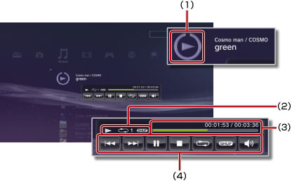

Muzyka > Używanie miniaturowego panelu sterowania
Używanie miniaturowego panelu sterowania
Miniaturowy panel sterowania służy do wykonywania różnych funkcji podczas odtwarzania muzyki.
1. |
Podczas odtwarzania muzyki naciśnij klawisz PS. |
||||||||
|---|---|---|---|---|---|---|---|---|---|
2. |
Używając przycisków kierunkowych, wybierz ikonę dla zawartości muzycznej odtwarzanej w kategorii 
|
Wskazówki
- Ikona odtwarzanej zawartości muzycznej jest wyświetlana bezpośrednio pod ikoną
 (Muzyka).
(Muzyka). - Panel sterowania można ukryć przez naciśnięcie przycisku
 podczas odtwarzania muzyki.
podczas odtwarzania muzyki.
Poprzedni

Umożliwia powrót do początku bieżącego lub poprzedniego utworu.
Następny
Umożliwia przejście do początku następnego utworu.
Wstrzymaj
Wstrzymanie odtwarzania.
Zatrzymaj
Zatrzymanie odtwarzania i ukrycie miniaturowego panelu sterowania.
Odtwarzaj losowo
Umożliwia odtwarzanie utworów w kolejności losowej.
Powtórz
Umożliwia wielokrotne odtwarzanie utworów. Można wybrać jeden z trzech pokazanych niżej trybów powtarzania, naciskając przycisk  .
.
 |
Wielokrotne odtwarzanie jednego utworu. |
|---|---|
|
Wielokrotne odtwarzanie wszystkich utworów. |
| Brak ikony | Wyłączenie powtarzania i odtwarzanie wszystkich utworów w ustalonej kolejności. |
Regulacja głośności
Umożliwia dostosowanie poziomu głośności utworów odtwarzanych w kategorii (Muzyka). Można wybrać jeden z dziewięciu poziomów.
Wskazówka
Jeśli poziom głośności dźwięku jest za wysoki, dźwięk może być zniekształcony. W takim przypadku należy zmniejszyć poziom głośności.